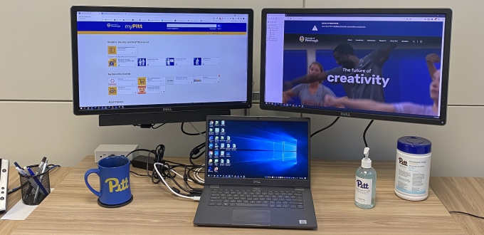
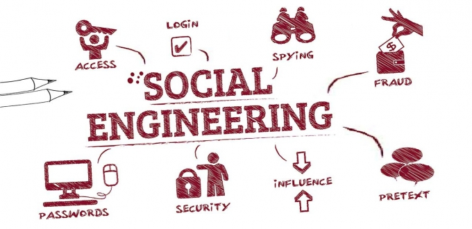
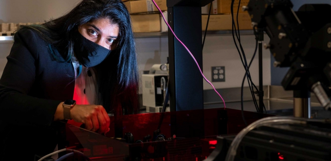
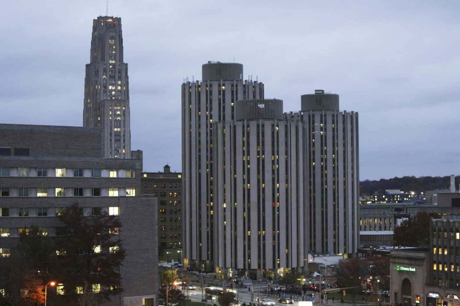
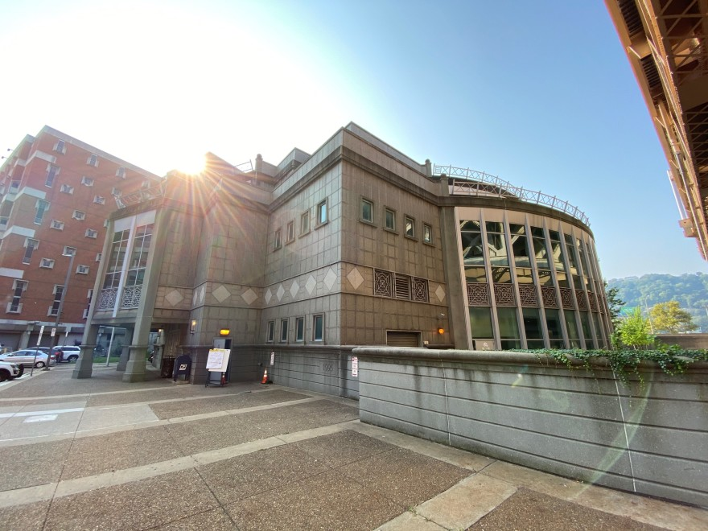
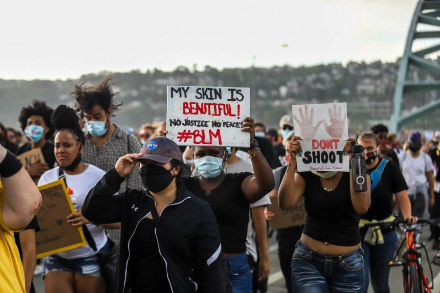
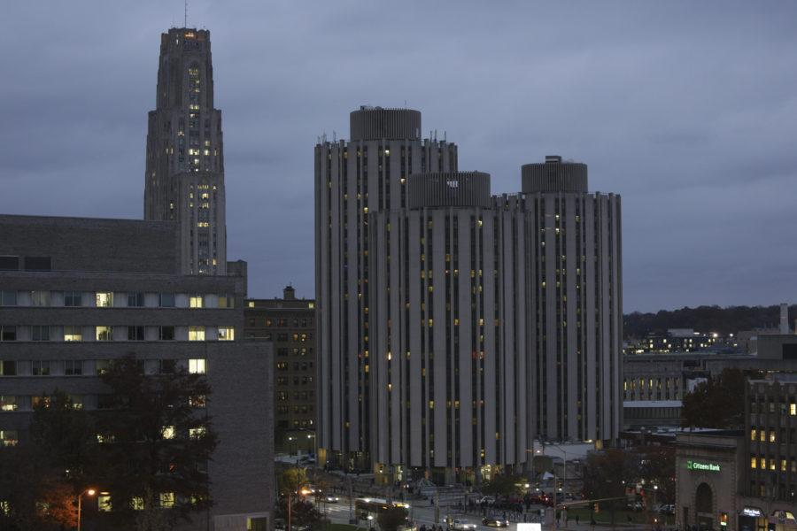
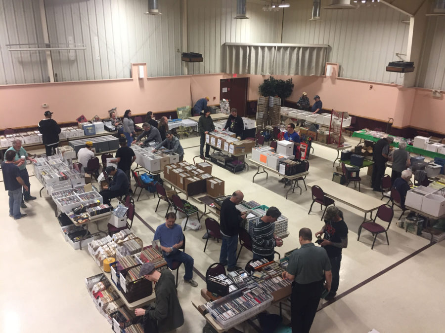
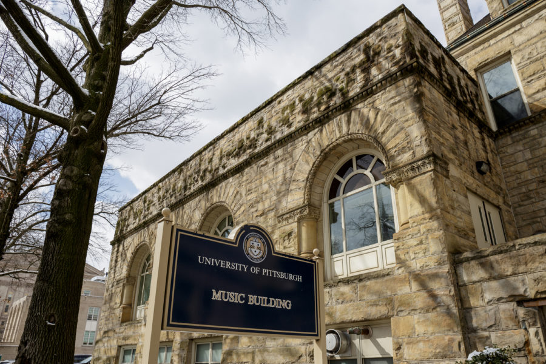

Writing Samples
A selection of marketing, communications, and journalism writing — led here with the work most relevant to content and marketing roles.
Marketing & Communications
Blog posts and feature articles written for the University of Pittsburgh's IT communications team and Pittwire, covering campus technology, security awareness, and digital accessibility.
-

Marketing & commsHybrid First: Implementing a Hoteling Office for the CFO
September 8, 2021For the past 18 months, many campus offices have been empty. Hallways were quiet, office doors were locked, and lights stayed dark. But recently, the familiar hum of a new academic year grew louder, with thousands of students moving into the residence halls and in-person activities resuming.
-
Marketing & comms
Teaching Data Security to Tomorrow's Professionals
July 13, 2021The Security Assured Data Science Education and Training project—also known as SADET—aims to create a foundational and interdisciplinary data science and cybersecurity curriculum for local high schools.
-
Marketing & comms
Home installations are underway for a community Wi-Fi pilot
September 9, 2021Last fall, the roof of the Cathedral became home to an array of antennas for Every1online, a pilot program spearheaded by non-profit Meta Mesh Wireless Communities that aims to provide free Wi-Fi to area families in need.
-
Marketing & comms
Catching Phish: How to Spot Sophisticated Scams
August 4, 2021Over the past few weeks, you may have noticed an influx of Pitt IT alerts regarding phishing scams. Bad guys can be very sophisticated, creating phishing scams that are very difficult to spot. Difficult, but not impossible. Here are some next-level tips to help protect you from next-level phishing attacks.
-
Marketing & comms
Digital Accessibility for Superior Performance
November 16, 2021To create a truly vibrant learning, research, and teaching environment, the University needs the full participation, contribution, and engagement of every person in our community. That means everyone must be able to access all our resources and programs, including those that are online.
-

Marketing & commsHacking the Human
October 12, 2021It’s Cybersecurity Awareness Month—Pitt IT’s favorite time of year. Techies often focus on the high-tech methods hackers use to crack passwords, bypass firewalls, infect a device, and steal people’s data or money. But the truth is that most cybercriminals don’t hack your system.
-
Marketing & comms
Perfect Your Password Protection
October 27, 2021Passwords – you can’t escape them. Logging into your computer? Enter your password. Checking your email? Enter your password. Passwords are such an integral part of online life, it’s easy to forget how important they actually are for protecting your digital footprint. Here are some tips for becoming a password pro.
-
Marketing & comms
Protect Your Tech, Protect Yourself: Safe Computing at Pitt
September 1, 2021A new semester brings many things: new members of the Pitt community, a new schedule, and a new year of working on your device. Unfortunately, it also brings new cybersecurity threats, with hackers hoping to wreak havoc with your online identity. Here are some tips for keeping your information, your devices, and yourself safe and secure.
-
Marketing & comms
Super Safe Winter Vacation
December 14, 2021t’s that time of year again, Panthers. The fall semester is coming to a close, and winter break is on the horizon! While you’re off relaxing and celebrating, make sure you’re your tech, and your data stays secure.
-

Marketing & commsIT Tools for Researchers
September 22, 2021Pitt researchers use their extensive knowledge, boundless curiosity, and innovative techniques to bring new ideas to life. It takes robust technology tools to help investigators collect, store, and analyze the data; document their processes and results; and share and work with collaborators and lab personnel.
Journalism
News and feature reporting written as a staff writer and editor for The Pitt News, the University of Pittsburgh's student newspaper, plus contributions to 90.5 WESA, Pittsburgh's NPR affiliate.
-

JournalismThe 48 Hours that changed an SGB election
March 10, 2021Last week’s Student Government Board elections were unusually contentious when two committees disqualified the Vision slate mere hours before voting started. Here’s an in-depth analysis into the 48 hours that altered the course of the election.
-
Journalism
Faculty express concerns about Pitt-Outlier partnership
December 16, 2020Faculty at Pitt’s Oakland campus will no longer be involved in the University’s partnership with education-technology startup Outlier, according to faculty government president Chris Bonneau.
-
Journalism
Pittsburghers take to streets to celebrate Biden victory
November 7, 2020Pittsburghers danced and marched in the streets of the City’s South Side neighborhood mid-day Saturday after the 2020 presidential election was called for former Vice President Joe Biden.
-

Journalism90.5 WESA: Most Charges Held for Trial Against Three Activists Accused in Downtown Bar Protest
Sept. 25, 2020Three local activists are heading to trial to face charges in connection with a June protest at 941 Saloon downtown.
-

JournalismPitt offers new mandatory anti-racism class for first-year students
August 23, 2020Pitt is offering a one-credit, online course on systemic anti-racism and anti-Black racism called Anti-Black Racism: History, Ideology and Resistance beginning this fall.
-
Journalism
90.5 WESA: Pittsburgh Housing Advocates Ask for Eviction Moratorium Extension
August 21, 2020A cacophony of car horns filled Downtown Pittsburgh and a handful of other city neighborhoods Monday as demonstrators called for the extension of a statewide eviction moratorium.
-

JournalismStudents required to shelter in place prior to returning to in-person classes
July 20, 2020Pitt is requiring all students, including those who live off campus, to complete a 14-day shelter-in-place period before attending in-person classes.
-
Journalism
E. Maxine Bruhns, former Nationality Rooms director, dies at 96
July 18, 2020E. Maxine Bruhns, the former director of Pitt’s Nationality Rooms and Intercultural Exchange Programs, passed away Friday at 96. Bruhns served as director for over 50 years and retired in January.
-
Journalism
Pittsburgh Against Fascism in India holds vigil for victims of Delhi riots
March 3, 2020Pittsburgh Against Fascism in India held a candlelight vigil on Monday night to honor the 50 victims of the late February riots in North East Delhi.
-
Journalism
Heralding the holidays with the Heinz Chapel Choir
December 5, 2019The Heinz Chapel Choir performed their holiday concert “To Make Music in the Heart” Tuesday evening in Heinz Memorial Chapel, the third of six performances in their annual holiday concert series.
-
Journalism
Pitt Law alum to be first female Chester County district attorney
December 4, 2019Deb Ryan won the Chester County District Attorney’s race last month, beating First Assistant District Attorney Mike Noone in a 76,251 to 62,958 victory. Ryan will be the first Democratic DA in Chester County, as well as the first woman to hold the position.
-
Journalism
Vlogger David Dobrik brings YouTube to the WPU
November 7, 2019Students had already started lining up in both the standby and ticket-holder lines at 1 p.m. to see Dobrik, a YouTube personality, take the stage on Wednesday night in Pitt Program Council’s “An Evening With David Dobrik.”
-

JournalismPittsburgh Record Convention showcases vinyl revival
May 15, 2019The vinyl record has risen again, if Pittsburgh’s biannual Record Convention is any indication. The most recent Record Convention took place on May 11 at the Sokol Club in the South Side.
-

JournalismPitt finalizes Campus Master Plan
March 5, 2019After more than a year and a half of development, Pitt’s Campus Master Plan, or CMP, was released on Feb. 11. The CMP is a detailed outline of the future of Pitt’s Oakland campus and its plan for development over the next 20 to 30 years.
-
Journalism
Pitt alumna makes NYT Bestseller list
February 21, 2019Rachael Lippincott has been on The New York Times’ best-seller young-adult hardcover list for the past 11 weeks because of her novel adaptation of the movie “Five Feet Apart.”